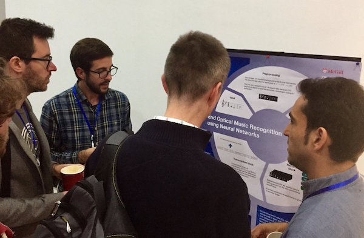
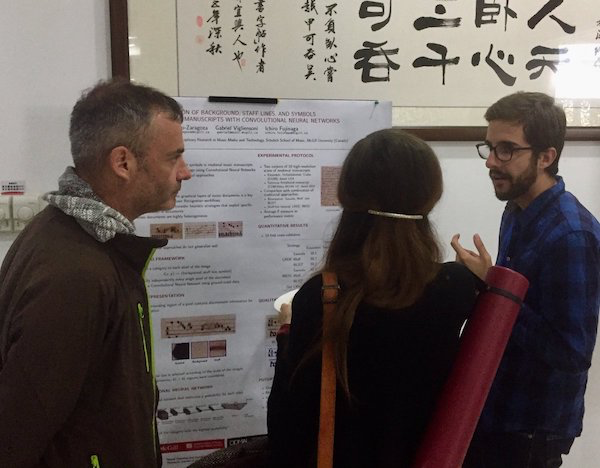
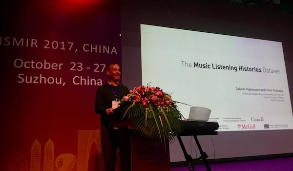
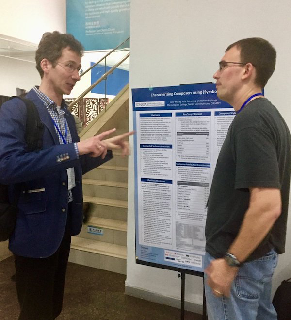
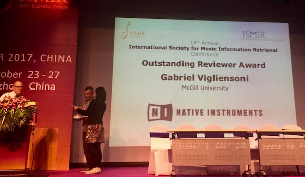

SIMSSA in Suzhou: ISMIR and DLfM 2017
Posted by ehopkins on October 31, 2017
Last week, several SIMSSA participants presented their latest research in Suzhou and Shanghai, China, at ISMIR (International Society for Music Information Retrieval) and its Satellite conference, DLfM (Digital Libraries for Musicology.)
SIMSSA Postdoc Jorge Calvo-Zaragoza presented a poster on “End-to-End Optical Music Recognition Using Neural Networks” co-authored by Jose J. Valero-Mas and Antonio Pertusa, colleagues from the University of Alicante. 
Jorge had a second poster with SIMSSA Postdoc Gabriel Vigliensoni and PD Ichiro Fujinaga – this one on “One-Step Detection of Background, Staff Lines, and Symbols in Medieval Music Manuscripts with Convolutional Neural Networks”. 
Gabriel finished his PhD at McGill this past spring, and also gave a presentation to introduce and launch a dataset he assembled for his dissertation, “The Music Listening Histories Dataset.” Including more than 27 billion time-stamped logs from Last.fm, it is now available online for you to access and download here.

We also had representatives in the Late-Breaking Demos and poster session. SIMSSA Co-Applicant Cory McKay (with Julie Cumming and Ichiro Fujinaga) had a poster on some recent work using jSymbolic2, “Characterizing Composers Using jSymbolic2 Features”. This work has some very promising implications for composer attribution that we are hoping to explore further in the near future!

Also, Yaolong Ju presented his work (with SIMSSA postdocs Nathanial Condit-Schultz and Claire Arthur, and PD Ichiro Fujinaga) on “Non-Chord Tone Identification Using Deep Neural Networks”, his machine learning project involving Bach chorales and automated harmonic analysis.
Finally, Gabriel was also awarded Best Reviewer. There were more than 200 highly capable reviewers for all the ISMIR 2017 submissions, so we are very proud of Gabriel for being recognized in this way!

After ISMIR, a few SIMSSA researchers also presented at DLfM – the full programme is online here. SIMSSA undergraduate programmer and researcher David Garfinkle presented his recent work (with Schubert, Arthur, Cumming, and Fujinaga) on melodic search, “PatternFinder: Content-Based Music Retrieval with music21” (available on GitHub here.) Yaolong Ju, SIMSSA PhD student, also presented on the same project he demonstrated at ISMIR. Finally, Cory McKay had a poster, “A Database Model for Computational Music Research”, outlining a new data model for symbolic music that will help us with the next phase of our ELVIS Database.
Next year, ISMIR 2018 will be in Paris! Hopefully we’ll get to go again and see lots of you there.